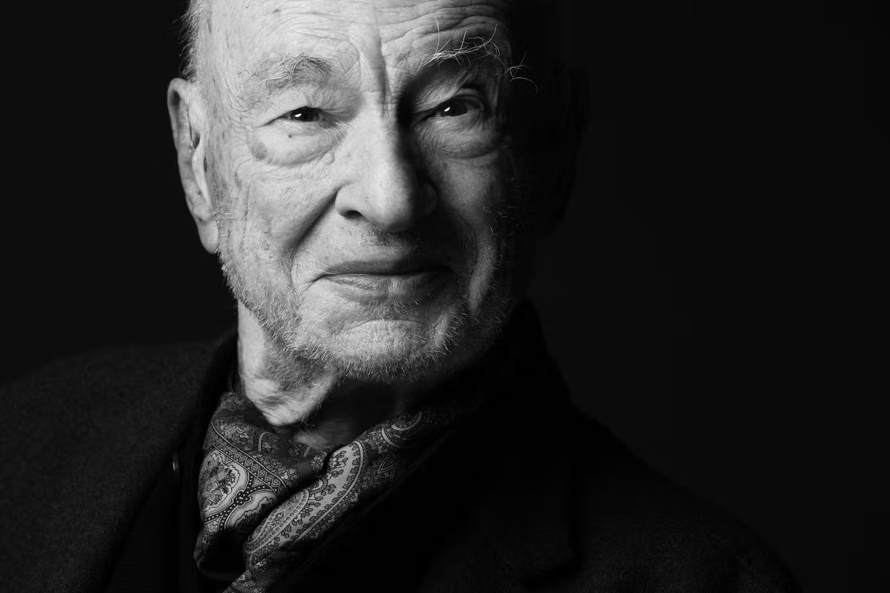

Note: AI tools were used to assist in the drafting and editing parts of this article. All content has been reviewed, edited, before publishing.
At its heart, Morin’s theory is a rejection of the “simplifying thought” that has dominated Western science since the Enlightenment. Morin argues that our traditional way of knowing involves breaking things down into isolated, specialized fragments—a process called reductionism—which ultimately “mutilates” our understanding of the world. Instead, he proposes that reality is a complexus, a Latin term meaning “that which is woven together.”
In this view, a system is not just a collection of parts; it is a dense tapestry of interactions, feedback loops, and contradictions where the “whole” is simultaneously more and less than the sum of its parts.
Complexity isn’t about having all the answers; it’s about a dialogical way of thinking that embraces uncertainty and looks for the invisible threads that connect biology to sociology, or, in our case, code to culture.
His framework is built on these pillars:
- The Systemic Principle: The whole is both more and less than the sum of its parts.
- The Hologrammatic Principle: The whole is present within each part (like DNA in a cell).
- The Recursive Principle: Effects and products are simultaneously the causes that produce them.
- The Dialogical Principle: Contradictory ideas (like order and disorder) can coexist and be inseparable.

The “Complexus” Developer: Weaving a New Era of Engineering
We are living through a moment where the logic of specialization—the idea that value is created by knowing more and more about less and less—is beginning to fail us. For the better part of the last half-century, the dominant logic of the global economy has been to become a “domain expert.” You were a “Frontend Developer” or a “Database Administrator.” You stayed in your lane.
But as AI coding agents begin to automate the “syntax” of these specialized lanes, we are seeing the birth of the Transdisciplinary Developer.
This isn’t just a developer who knows more tools; it is a developer who thinks differently about the “woven” nature of the systems they build. Here is how that shift looks through the lens of Morin’s complexity.
The Hologrammatic Developer
One of Morin’s most striking ideas is the Hologrammatic Principle: the notion that not only is the part in the whole, but the whole is in the part. In the old model of the SDLC, a developer could be blissfully ignorant of the broader system architecture or the data ethics of the firm. But when you use an AI agent to scaffold an entire application, that isolation vanishes.
To be effective today, a developer must hold the entire “hologram” of the project—the security, the UX, and the business logic—within every single prompt they write. The “part” (the code) now requires a deep, intuitive understanding of the “whole” (the system).
From “Programming” to “Orchestration”
There is a version of this story where AI makes developers obsolete. But I think Morin would argue the opposite. He makes a distinction between a “Program”, which is a rigid set of instructions, and a “Strategy.” A program works when things are predictable; a strategy works in the face of uncertainty. As AI takes over the “programming,” the human role shifts toward Strategy.
The Transdisciplinary Developer becomes an Orchestrator of Complexity, navigating the “recursive loops” where a change in a database structure (an effect) immediately becomes the cause of a fundamental change in how a user experiences the product.
The New Constraint: Comprehension
The real constraint in the coming years isn’t going to be how many lines of code we can write; AI has made the marginal cost of a line of code approach zero. The real constraint is comprehension.
If we continue to think as narrow specialists, we will build systems that are too complex for any one human to understand, leading to what Morin calls “the blind intelligence.” But the Transdisciplinary Developer, the one who can weave together disparate fields of knowledge using AI as their loom, offers a way out. They aren’t just building better software; they are building a way to think about the world that is as complex as the world actually is.
The Evolution: From Developer to Entrepreneur
Finally, we have to consider where this trajectory leads. When the barrier between “writing the code” and “architecting the system” dissolves, the role of the developer undergoes a profound metamorphosis into that of the Entrepreneur. In the old paradigm, the developer was a builder of tools; in the transdisciplinary paradigm, the developer is a builder of Value.
By mastering complexity, you are no longer limited by your ability to implement a feature; you are empowered by your ability to perceive a market need and orchestrate an entire ecosystem—technical, social, and economic—to meet it. This is the ultimate “auto-eco-organization”: a developer who uses AI to handle the “how,” freeing their mind to define the “what” and the “why.” In this sense, the complexus developer is the first truly “full-stack” entrepreneur, capable of seeing the whole business in the part of the code, and the whole code in the part of the business.